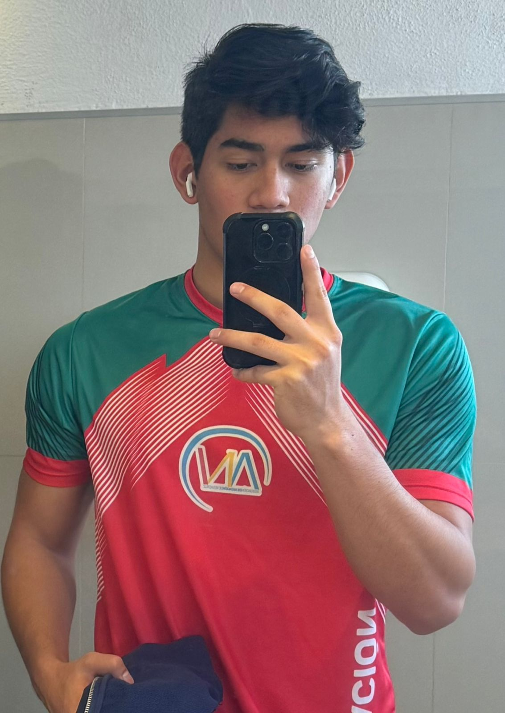

Johan Abelardo Del Ángel González
CSS
Soy es un estudiante de Tecnologías de la Información apasionado por la programación, el desarrollo de aplicaciones y la resolución de problemas tecnológicos. Me caracteriza por mi interés en aprender constantemente, analizar soluciones tecnológicas y aplicar mis conocimientos en proyectos prácticos e innovadores.
